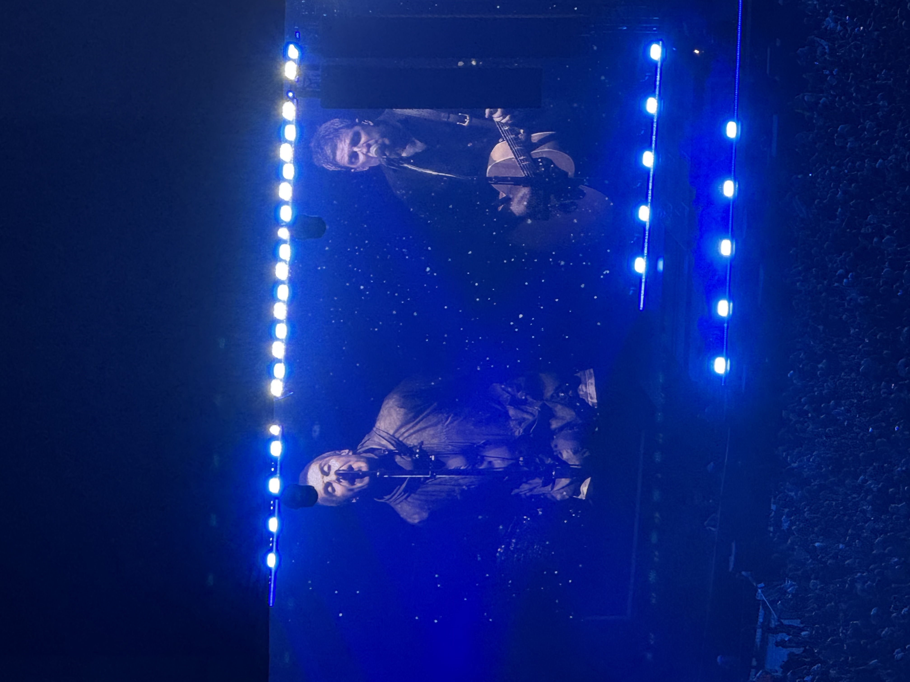
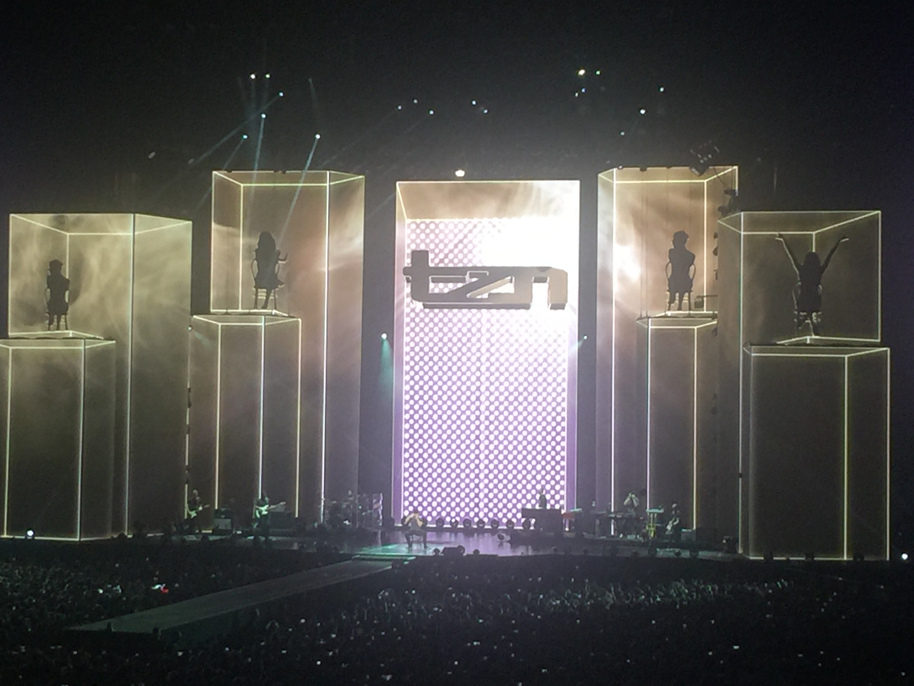
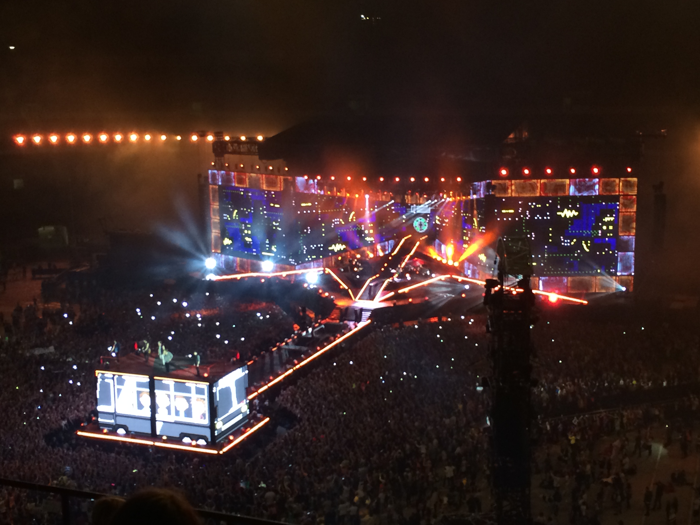
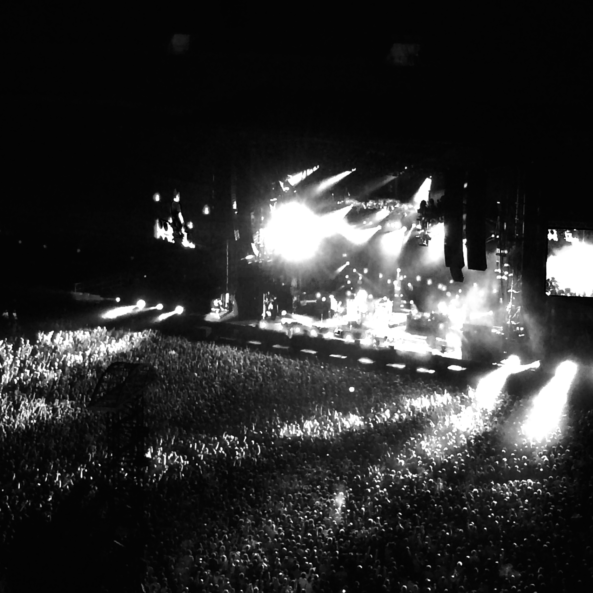
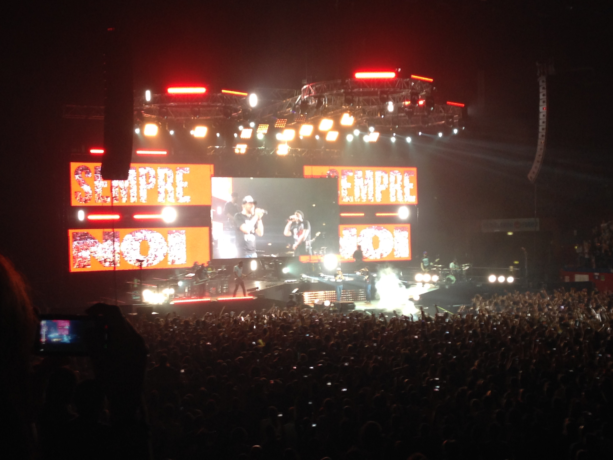
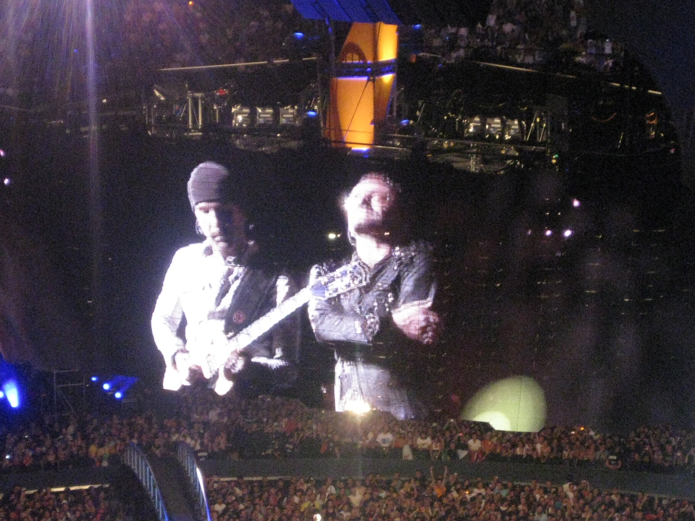
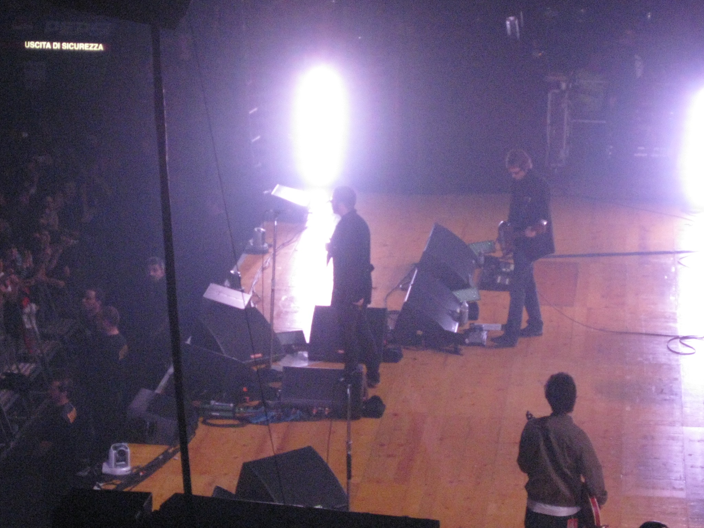
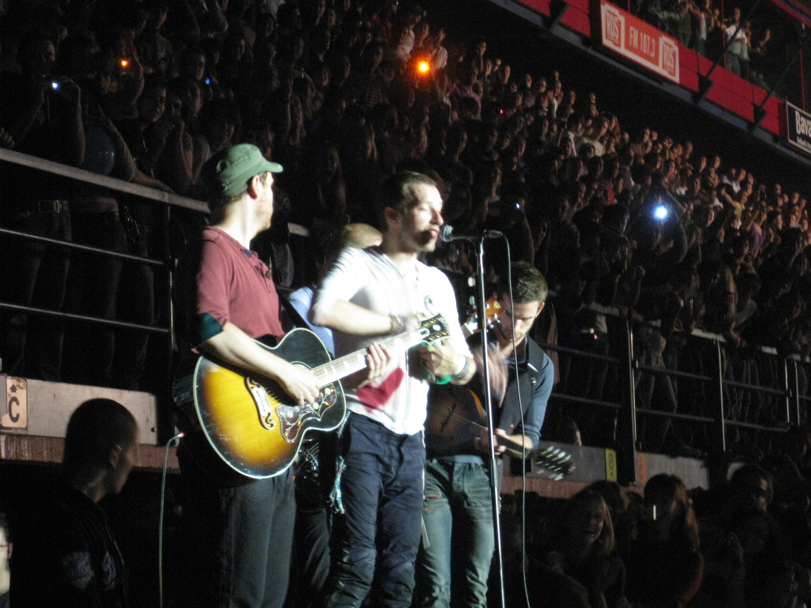

LIVE · 2025
Oasis
Cardiff
APPLE MUSIC
Le canzoni a cui torno.
E quelle appena arrivate.
Libreria aggiornata al 9 ottobre 2026
ON REPEAT / 01
Di sempre, secondo gli ascolti registrati nella mia libreria Apple Music.
 BrividiMahmood & BLANCO206 ascolti
BrividiMahmood & BLANCO206 ascolti I Tuoi ParticolariUltimo185 ascolti
I Tuoi ParticolariUltimo185 ascolti Thinking Out LoudEd Sheeran151 ascolti
Thinking Out LoudEd Sheeran151 ascolti The A TeamEd Sheeran150 ascolti
The A TeamEd Sheeran150 ascolti Hola (I Say) [feat. Tom Walker]Marco Mengoni140 ascolti
Hola (I Say) [feat. Tom Walker]Marco Mengoni140 ascolti When We Were YoungAdele134 ascolti
When We Were YoungAdele134 ascolti DemonsImagine Dragons132 ascolti
DemonsImagine Dragons132 ascolti La musica non c'èCoez129 ascolti
La musica non c'èCoez129 ascolti Shot for MeDrake128 ascolti
Shot for MeDrake128 ascolti Sono sempre i sogni a dare forma al mondoLigabue126 ascoltiRondini Al GuinzaglioUltimo122 ascolti
Sono sempre i sogni a dare forma al mondoLigabue126 ascoltiRondini Al GuinzaglioUltimo122 ascolti InuyashaMahmood121 ascolti
InuyashaMahmood121 ascolti Waves (Robin Schulz Radio Edit)Mr. Probz113 ascolti
Waves (Robin Schulz Radio Edit)Mr. Probz113 ascolti Fate Don't Know YouDesi Valentine110 ascolti
Fate Don't Know YouDesi Valentine110 ascolti Love StoryTaylor Swift110 ascolti
Love StoryTaylor Swift110 ascolti AbbracciameAndrea Sannino109 ascolti
AbbracciameAndrea Sannino109 ascolti 16 Marzo (feat. Gow Tribe)Achille Lauro105 ascolti
16 Marzo (feat. Gow Tribe)Achille Lauro105 ascolti El PerdónNicky Jam & Enrique Iglesias105 ascolti
El PerdónNicky Jam & Enrique Iglesias105 ascolti L'ULTIMA POESIAGeolier & Ultimo104 ascolti
L'ULTIMA POESIAGeolier & Ultimo104 ascolti Un'Altra Storia (feat. Franco126)Marco Mengoni97 ascolti
Un'Altra Storia (feat. Franco126)Marco Mengoni97 ascolti GAIOLALIBERATO95 ascolti
GAIOLALIBERATO95 ascolti We Are Never Ever Getting Back TogetherTaylor Swift95 ascolti
We Are Never Ever Getting Back TogetherTaylor Swift95 ascolti La descrizione di un attimoTiromancino93 ascolti
La descrizione di un attimoTiromancino93 ascolti Love YourselfJustin Bieber87 ascolti
Love YourselfJustin Bieber87 ascolti LOVE. (FEAT. ZACARI.)Kendrick Lamar82 ascolti
LOVE. (FEAT. ZACARI.)Kendrick Lamar82 ascolti Soldi (feat. Guè Pequeno)Mahmood82 ascolti
Soldi (feat. Guè Pequeno)Mahmood82 ascolti RapideMahmood79 ascolti
RapideMahmood79 ascolti Potremmo RitornareTiziano Ferro78 ascolti
Potremmo RitornareTiziano Ferro78 ascolti 22 settembreUltimo77 ascolti
22 settembreUltimo77 ascolti Am I WrongNico & Vinz77 ascolti
Am I WrongNico & Vinz77 ascolti Cascare nei tuoi occhiUltimo76 ascolti
Cascare nei tuoi occhiUltimo76 ascolti Take a BowRihanna76 ascolti
Take a BowRihanna76 ascolti BarcellonaGhali75 ascolti
BarcellonaGhali75 ascolti PhotographEd Sheeran73 ascolti
PhotographEd Sheeran73 ascolti LoverTaylor Swift72 ascolti
LoverTaylor Swift72 ascolti Stay With MeSam Smith72 ascolti
Stay With MeSam Smith72 ascolti La differenza tra me e teTiziano Ferro71 ascolti
La differenza tra me e teTiziano Ferro71 ascolti Ragazza magicaJovanotti71 ascolti
Ragazza magicaJovanotti71 ascolti Stanza Singola (feat. Tommaso Paradiso)Franco12671 ascoltiRolls Royce (feat. Boss Doms, Frenetik&Orang3)Achille Lauro69 ascolti
Stanza Singola (feat. Tommaso Paradiso)Franco12671 ascoltiRolls Royce (feat. Boss Doms, Frenetik&Orang3)Achille Lauro69 ascolti ShallowLady Gaga & Bradley Cooper69 ascolti
ShallowLady Gaga & Bradley Cooper69 ascolti See You Again (feat. Charlie Puth)Wiz Khalifa66 ascoltiFaccio un casinoCoez65 ascolti
See You Again (feat. Charlie Puth)Wiz Khalifa66 ascoltiFaccio un casinoCoez65 ascolti Il ballo delle incertezzeUltimo65 ascolti
Il ballo delle incertezzeUltimo65 ascoltiNEW IN / 02
Gli ultimi brani che ho aggiunto alla mia libreria.
 A mano a manoRino Gaetano
A mano a manoRino Gaetano SoleoNadia von Jacobi
SoleoNadia von Jacobi DON'T WANNA SLEEPMåneskin
DON'T WANNA SLEEPMåneskin Here Comes the Sun (2019 Mix)The Beatles
Here Comes the Sun (2019 Mix)The Beatles The Shock of the LightningOasis
The Shock of the LightningOasis A Sky Full of Stars (Radio Edit)Coldplay
A Sky Full of Stars (Radio Edit)Coldplay Amazing GraceAretha Franklin
Amazing GraceAretha Franklin It'll Be OkayShawn Mendes
It'll Be OkayShawn MendesLIVE / 03
La musica ascoltata dal vivo.

LIVE · 2025
Cardiff

LIVE · 2015
Milano

LIVE · 2014
Milano

LIVE · 2013
Milano

LIVE · 2013
Milano

LIVE · 2009
Milano

LIVE · 2009
Treviso

LIVE · 2008
Milano